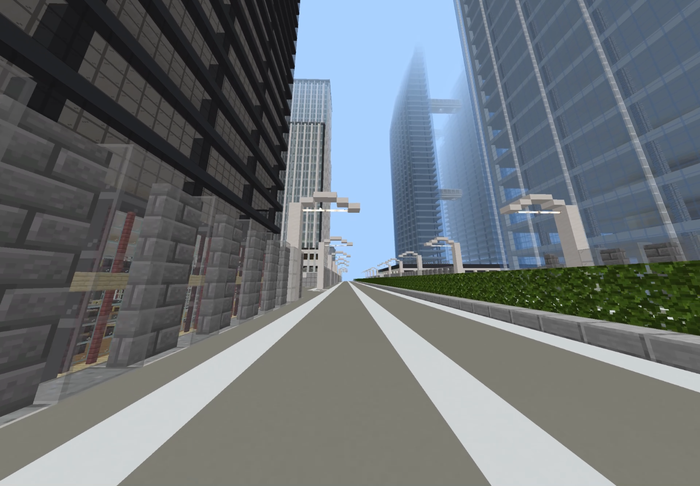
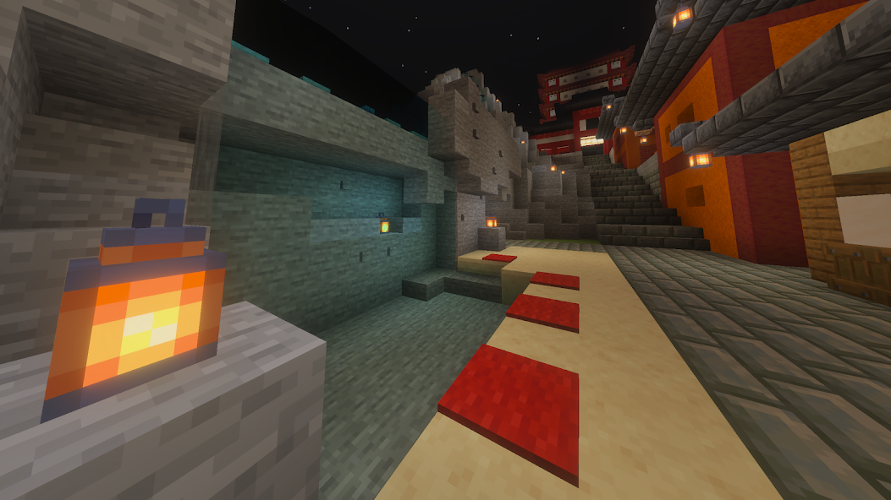
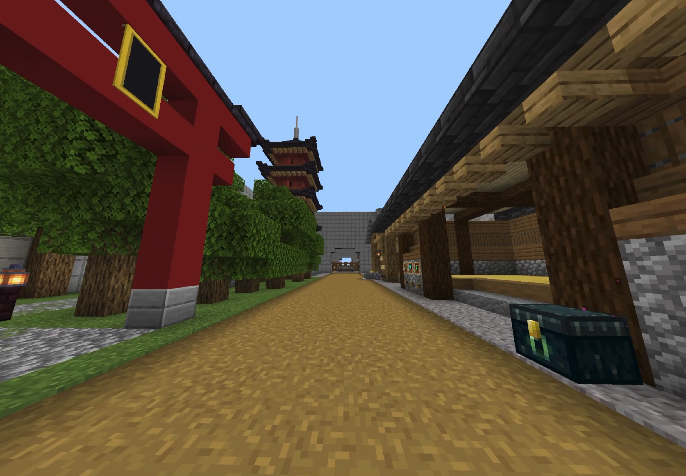

作品紹介

風見市
僕が高校2年生のときに作った街です。
高層ビル、地下鉄、高速道路などがあり現代風な街なのが特徴です。

凪ヶ丘
風見市にある川を下っていくとたどり着く街です。中華風の街で、道が入り組んでいるのが特徴です。

GameSquare
コマンドを使い様々なゲームを作りたかったため作った街です。建物１つ１つにゲームが入っており、壁を超えるたび様々な雰囲気の街を見ることができます。
- ※画像をタップするとその街のギャラリーに飛びます
ギャラリー
風見市
メインストリート沿いに風見市ツインタワーや、繁華街、高層ビル群、マンションが並んでいる。
一部の建物にしか内装はないが、市役所にある本でその建物の設定資料集を読むことができる。



作り始めた経緯は、とあるyoutuberさんの現代都市制作の動画を見たことです。主に歩道を参考にしたので探したらわかるかも...?
建物の何個かは実際に存在している建物を参考にして作られていて、色々探してみると面白いかも。
作った理由はもう一つあり、建物やお店に設定をつけたかったというのもある。なので設定資料集が作られている。
凪ヶ丘
道が不規則になっていて路地多い、道には様々なお店が並んでおり毎日お祭りのような雰囲気を醸し出している。
道や建物が段々となっていて街の立体感を出している。



主＆主の友達「こういう雰囲気大好き！！」
元々少ししか作られていなかったが主の友達が「完成が楽しみ」と言われ制作を再開した街。
画像にはないがその友達もこの街の制作に関わっている。
スーパーフラットで制作しているため、地形も自作。(浮いてるのは許して...)
GameSquare
建物１つ１つに鬼ごっこや人狼、ボートレースなどのミニゲームがあり（他にもまだまだあるよ！）、壁を通るたび全く違う雰囲気の建物が出てくる。
ミニゲーム以外にも温泉や肝試しも存在しており、観光するだけでも十分楽しむことができる。



Switch版マイクラでミニゲーム制作をしていたが、iPadに移行しワールドを引き継げなかったため新しく作ったマップ
この現在マップだけ自作リソースパックを入れていて食べ物がオリジナルに変化している。
第２エリアはSwitch版で作った街をリメイクして作られている。
ちなみに温泉はコマンドで打たせ湯（画像２枚目）を作りたかったために制作された。